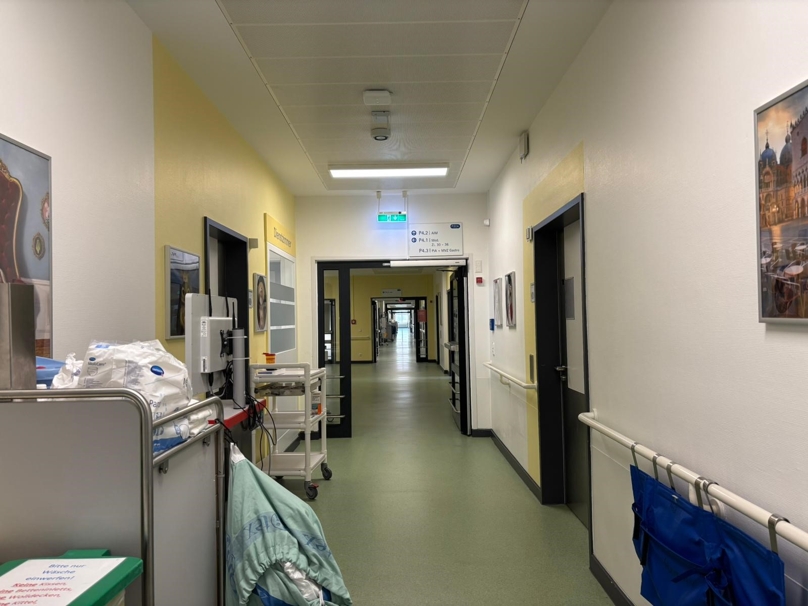
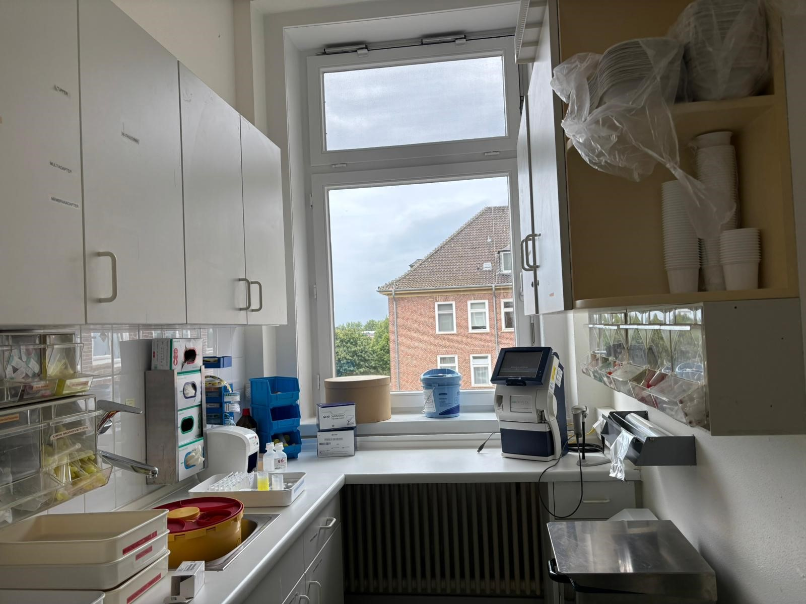
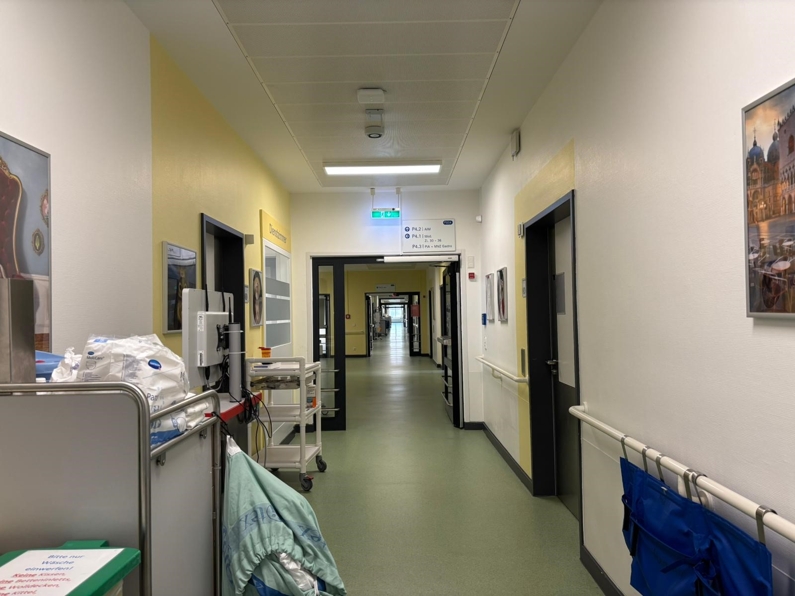
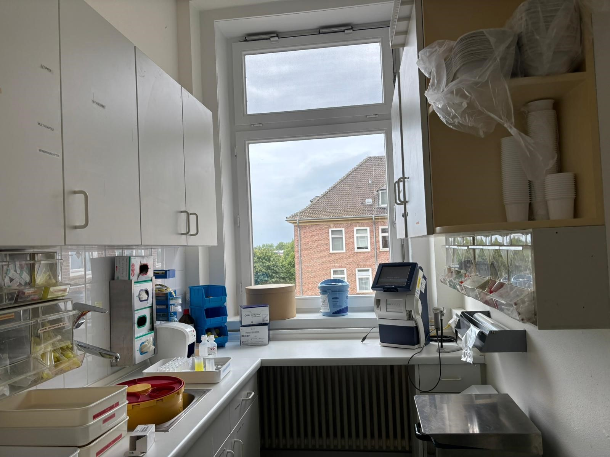

Versorgungsschwerpunkt Gastroenterologie
- Die Gastroenterologie umfasst die Behandlung von Erkrankungen des Magen-Darm-Trakts, der Leber, der Gallenwege und der Bauchspeicheldrüse, wozu akute und chronische Entzündungen, Geschwüre, chronisch-entzündliche Darmerkrankungen wie Morbus Crohn und Colitis ulcerosa sowie Tumorerkrankungen gehören.
- Ein besonderer Schwerpunkt liegt in der endoskopischen Diagnostik und Therapie, die unter anderem Gastroskopien, Koloskopien und Endosonographien beinhaltet.
Versorgungsschwerpunkt Diabetologie & Endokrinologie
- Auf unserer Station werden Patienten mit Erstdiagnose eines Diabetes, mit akuten Stoffwechselentgleisungen wie Hyper- oder Hypoglykämien sowie mit Folgeerkrankungen des Diabetes, insbesondere dem diabetischen Fußsyndrom, behandelt.
- Das Behandlungsteam besteht aus diabetologischen Ärzten, Diabetesberaterinnen und erfahrenen Pflege(fach)kräften, die gemeinsam eine umfassende Betreuung sicherstellen und ihr Fachwissen in Diabetologie einbringen.
- Ein besonderer Schwerpunkt liegt in der Versorgung des diabetischen Fußsyndroms, wobei moderne Verfahren des Wundmanagements wie Vakuumtherapie und Madentherapie eingesetzt werden.
- Bei schwerwiegenden Komplikationen, wie notwendigen Amputationen, erfolgt eine enge Zusammenarbeit mit der chirurgischen Abteilung.
- In enger Kooperation mit der Nuklearmedizin übernehmen wir zudem die Diagnostik hormoneller Störungen der Hypophyse, Schilddrüse und Nebennieren und leiten im stationären Rahmen komplexe endokrinologische Therapien ein.
Betten: 32
Clinical Focus: Gastroenterology
- Gastroenterology covers the treatment of diseases of the gastrointestinal tract, liver, biliary tract, and pancreas, including acute and chronic inflammations, ulcers, chronic inflammatory bowel diseases such as Crohn’s disease and ulcerative colitis, as well as tumor diseases.
- A particular focus is on endoscopic diagnostics and therapy, which includes gastroscopies, colonoscopies, and endosonographies.
Clinical Focus: Diabetology & Endocrinology
- On our ward, we treat patients with newly diagnosed diabetes, with acute metabolic derailments such as hyper- or hypoglycemia, as well as with secondary diseases of diabetes, particularly diabetic foot syndrome.
- The treatment team consists of diabetologists, diabetes educators, and experienced nursing staff who ensure comprehensive care together and contribute their expertise in diabetology.
- A particular focus is on the treatment of diabetic foot syndrome, where modern wound management methods such as vacuum therapy and maggot therapy are used.
- In severe complications, such as necessary amputations, there is close cooperation with the surgical department.
- In close cooperation with nuclear medicine, we also carry out diagnostics of hormonal disorders of the pituitary gland, thyroid, and adrenal glands and initiate complex endocrinological therapies in an inpatient setting.
Beds: 32